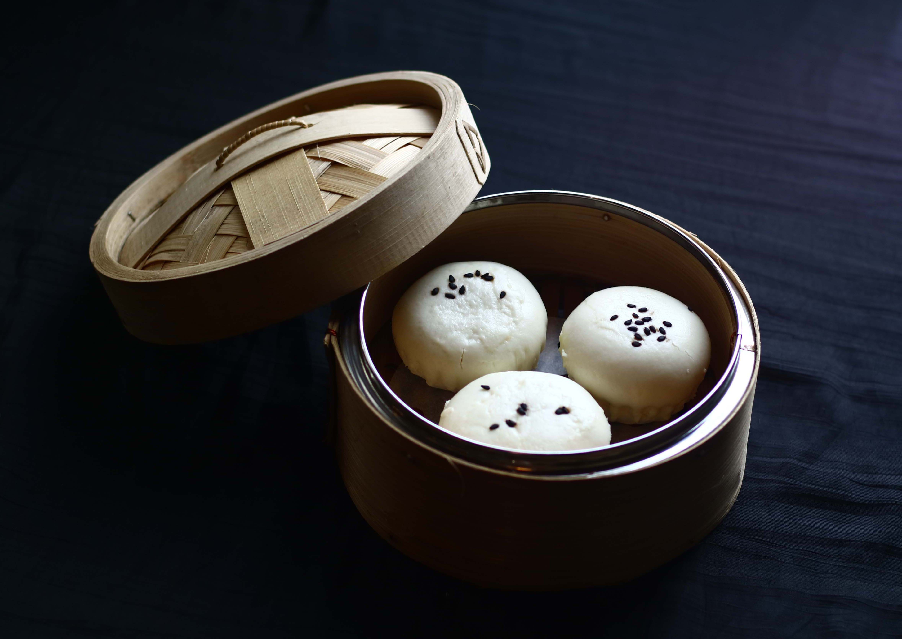
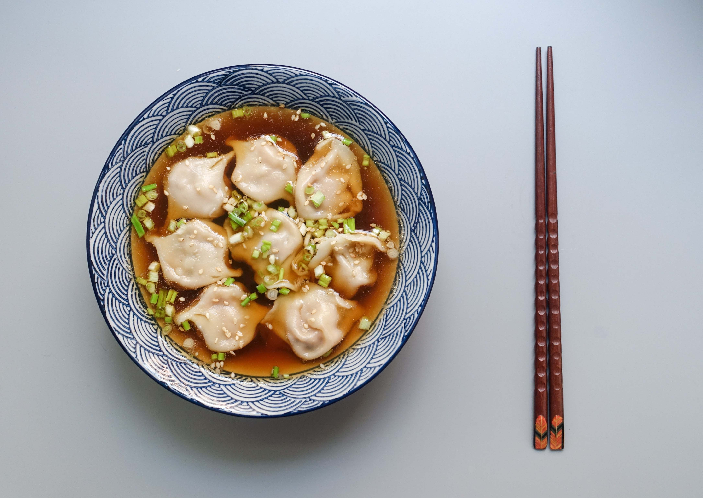
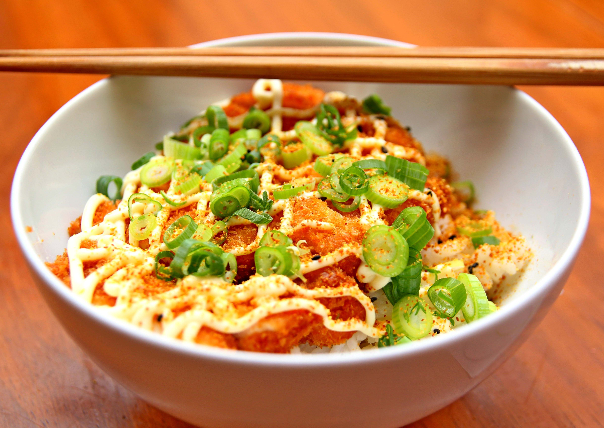

Xiao Long Bao
A small, meat-filled baozi (steamed bread) from Shanghai containing a juicy broth. Different with other types of Baos by being succulent and prepared only with thin, partially leavened dough.
Rp. 25,000 ,-

Steamed Dumplings
Dumpling is a broad classification for a dish that consists of pieces of dough (made from a variety of starch sources) wrapped around a filling or of dough with no filling. The dough can be based on bread, flour, or potatoes, and may be filled with meat, fish, cheese, vegetables, fruits, or sweets. Dumplings may be prepared using a variety of methods, including baking, boiling, frying, simmering, or steaming, and are found in many world cuisines.
Rp. 25,000 ,-

Chinese Noodles
Noodles are an essential ingredient and staple in Chinese cuisine. Chinese noodles vary widely according to the region of production, ingredients, shape or width, and manner of preparation. They are an important part of most regional cuisines within China, as well as in Singapore, and other Southeast Asian nations with sizable overseas Chinese populations.
Rp. 20,000 ,-